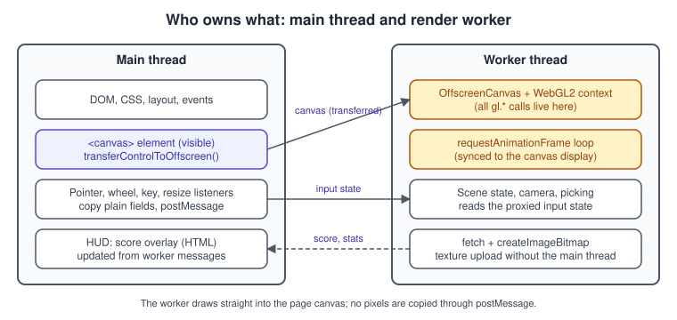
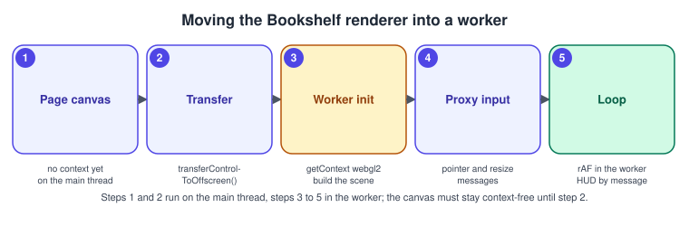

OffscreenCanvas and Workers
|
This content was generated with the assistance of AI and should be verified against the official documentation before being relied on in production. |
A WebGL application normally does everything on the main thread: it handles input, updates the scene, issues hundreds of gl.* calls and
runs the page’s layout and scripts, all within one 16.7 ms frame at 60 Hz. When the scene is heavy, or the page does other work such as
parsing JSON, a long task on the main thread makes the animation stutter, and a heavy animation makes the page unresponsive.
OffscreenCanvas lets a worker own the WebGL context and the render loop, so drawing and the page’s user interface no longer compete for one
thread. This page shows how the canvas is handed over, how input and size changes reach the worker, how data flows back, how the
three.js renderer is used the same way, and when the technique is not worth the added complexity.
The facts were checked in November 2026. The APIs documented are HTMLCanvasElement.transferControlToOffscreen(), the OffscreenCanvas
interface and WebGL2RenderingContext as specified by the WebGL 2.0 specification and the HTML Standard, plus three.js r187
(three@0.187.0). On the support side, caniuse lists OffscreenCanvas from Chrome 69, Firefox 105 and Safari 17, about 97 % of global
usage, and MDN marks transferControlToOffscreen() as widely available since March 2023. The examples are plain ES modules and need a
local web server, not file://, because module workers and fetch do not load from file://. They run in any current Chrome, Edge, Firefox or Safari.
This is the last step of the raw WebGL track of the Bookshelf running example: after the triangle, the textured and lit book, the shelf and shadow pass, picking and context-loss recovery (see Context Loss and Robustness), the whole renderer moves into a worker. General worker concepts (messages, structured clone, transferables) are introduced in Browser Workers; the canvas basics are in Canvas and WebGL in the Browser. Measuring whether the move helps is covered in Performance and Debugging.
What problem a worker solves
JavaScript is single threaded per realm, and a WebGL context is bound to the realm that created it. GPU work itself already runs outside the page (the browser forwards commands to a GPU process), so the main thread is not slowed by shading. What does cost main-thread time is:
-
recording the commands: validation of every
gl.*call, buffer uploads, uniform updates, which grows with the number of draw calls; -
your scene logic: animation, physics, culling, sorting, picking;
-
decoding and uploading images, which is partly synchronous;
-
everything else on the page: layout, style, event handlers, third-party scripts.
Moving the context to a worker removes the first three from the main thread and, as a side effect, stops page work from delaying frames. It does not make shading faster, it does not reduce GPU work and it does not remove the cost of compositing the canvas. If the GPU is the bottleneck (see the stall and timeline diagrams in Performance and Debugging), a worker will not help.

Handing the canvas to a worker
transferControlToOffscreen() is called on a <canvas> element that has not yet had getContext() called on it. It returns an
OffscreenCanvas that is a transferable object: you list it in the second argument of postMessage, and the ownership moves to the worker.
The element stays in the page, takes part in layout and shows whatever the worker draws.
| Member | Meaning |
|---|---|
|
Returns the |
|
The transfer list is required; without it the object cannot be cloned and the call throws a |
|
Called in the worker. Accepts the same context attributes as on a normal canvas ( |
|
The drawing buffer size, set from the worker. Setting |
|
Available in a dedicated worker whose |
|
For an |
|
Encodes the current content as an image Blob (PNG by default), for screenshots taken inside the worker. |
Two consequences matter in practice. First, the element size in the page is still controlled by CSS, so the worker never sees layout: the main thread must
measure the element and tell the worker (below). Second, because only one place may own the context, any code that calls canvas.getContext()
on the main thread (an overlay library, a screenshot helper) breaks the transfer; check the order.
The Bookshelf in a worker: complete example
The example has three files. The page contains the canvas and an HTML score overlay, which is deliberately left on the main thread: the DOM is not available in a worker, and an HTML overlay is the cheapest way to show text.
<!-- index.html -->
<!doctype html>
<html lang="en">
<head>
<meta charset="utf-8">
<meta name="viewport" content="width=device-width, initial-scale=1">
<title>Bookshelf in a worker</title>
<style>
html, body { margin: 0; height: 100%; background: #111827; }
#stage { position: relative; width: 100%; height: 100%; }
canvas { width: 100%; height: 100%; display: block; touch-action: none; }
#hud { position: absolute; left: 12px; top: 8px; color: #f9fafb; font: 14px/1.4 system-ui, sans-serif; }
</style>
</head>
<body>
<div id="stage">
<canvas id="c"></canvas>
<div id="hud">Loading...</div>
</div>
<script type="module" src="./main.js"></script>
</body>
</html>The main thread creates the worker, transfers the canvas, measures the element with a ResizeObserver and forwards pointer input.
// main.js
const canvas = document.getElementById('c');
const hud = document.getElementById('hud');
if (!('transferControlToOffscreen' in canvas)) {
hud.textContent = 'OffscreenCanvas is not supported here; run the renderer on the main thread instead.';
throw new Error('No OffscreenCanvas');
}
const worker = new Worker(new URL('./render-worker.js', import.meta.url), { type: 'module' });
const offscreen = canvas.transferControlToOffscreen();
// 1. Hand the canvas over together with the initial size.
const dpr = () => Math.min(window.devicePixelRatio || 1, 2);
worker.postMessage(
{ type: 'init', canvas: offscreen, width: canvas.clientWidth, height: canvas.clientHeight, dpr: dpr() },
[offscreen]
);
// 2. Tell the worker whenever the element size or the pixel ratio changes.
const ro = new ResizeObserver(([entry]) => {
const { width, height } = entry.contentRect;
worker.postMessage({ type: 'resize', width, height, dpr: dpr() });
});
ro.observe(canvas);
// 3. Forward only plain data. Event objects cannot be cloned.
function pointerMessage(type, e) {
const r = canvas.getBoundingClientRect();
return { type, x: e.clientX - r.left, y: e.clientY - r.top, buttons: e.buttons, id: e.pointerId };
}
canvas.addEventListener('pointerdown', (e) => {
canvas.setPointerCapture(e.pointerId);
worker.postMessage(pointerMessage('pointerdown', e));
});
canvas.addEventListener('pointermove', (e) => worker.postMessage(pointerMessage('pointermove', e)));
canvas.addEventListener('pointerup', (e) => worker.postMessage(pointerMessage('pointerup', e)));
// 4. Anything the worker wants to show goes through messages.
worker.addEventListener('message', ({ data }) => {
if (data.type === 'hud') hud.textContent = data.text;
if (data.type === 'error') hud.textContent = `Renderer error: ${data.message}`;
});
worker.addEventListener('error', (e) => { hud.textContent = `Worker failed: ${e.message}`; });Source: MDN: Using Web Workers

The worker owns the context. It follows the same steps as the main-thread version (compile, link, buffers, VAO, draw); the page
First Triangle with WebGL 2 explains each of them, so the listing keeps shader and buffer code short and
concentrates on what is specific to workers: initial size handling, the loop, input state, texture loading with fetch and createImageBitmap, context-loss
events and messages back to the page.
// render-worker.js (module worker)
const VS = `#version 300 es
layout(location = 0) in vec3 aPos;
layout(location = 1) in vec2 aUv;
uniform mat4 uMvp;
out vec2 vUv;
void main() { vUv = aUv; gl_Position = uMvp * vec4(aPos, 1.0); }`;
const FS = `#version 300 es
precision mediump float;
in vec2 vUv;
uniform sampler2D uCover;
out vec4 outColor;
void main() { outColor = texture(uCover, vUv); }`;
let canvas, gl, program, vao, texture, mvpLoc;
let cssWidth = 300, cssHeight = 150, dpr = 1, sizeDirty = true;
let yaw = 0, dragging = false, lastX = 0;
let running = false, frames = 0, lastReport = 0;
self.addEventListener('message', async ({ data }) => {
switch (data.type) {
case 'init':
canvas = data.canvas;
cssWidth = data.width; cssHeight = data.height; dpr = data.dpr;
try { await start(); } catch (err) { self.postMessage({ type: 'error', message: String(err) }); }
break;
case 'resize':
cssWidth = data.width; cssHeight = data.height; dpr = data.dpr; sizeDirty = true;
break;
case 'pointerdown': dragging = true; lastX = data.x; break;
case 'pointermove':
if (dragging) { yaw += (data.x - lastX) * 0.01; lastX = data.x; }
break;
case 'pointerup': dragging = false; break;
}
});
function compile(type, src) {
const s = gl.createShader(type);
gl.shaderSource(s, src);
gl.compileShader(s);
if (!gl.getShaderParameter(s, gl.COMPILE_STATUS)) throw new Error(gl.getShaderInfoLog(s));
return s;
}
function createResources() {
program = gl.createProgram();
gl.attachShader(program, compile(gl.VERTEX_SHADER, VS));
gl.attachShader(program, compile(gl.FRAGMENT_SHADER, FS));
gl.linkProgram(program);
if (!gl.getProgramParameter(program, gl.LINK_STATUS)) throw new Error(gl.getProgramInfoLog(program));
mvpLoc = gl.getUniformLocation(program, 'uMvp');
// A book cover quad: x, y, z, u, v per vertex.
const quad = new Float32Array([
-0.6, -0.9, 0, 0, 1, 0.6, -0.9, 0, 1, 1, 0.6, 0.9, 0, 1, 0,
-0.6, -0.9, 0, 0, 1, 0.6, 0.9, 0, 1, 0, -0.6, 0.9, 0, 0, 0,
]);
vao = gl.createVertexArray();
gl.bindVertexArray(vao);
const vbo = gl.createBuffer();
gl.bindBuffer(gl.ARRAY_BUFFER, vbo);
gl.bufferData(gl.ARRAY_BUFFER, quad, gl.STATIC_DRAW);
gl.enableVertexAttribArray(0);
gl.vertexAttribPointer(0, 3, gl.FLOAT, false, 20, 0);
gl.enableVertexAttribArray(1);
gl.vertexAttribPointer(1, 2, gl.FLOAT, false, 20, 12);
gl.bindVertexArray(null);
}
async function loadCover() {
// No Image element and no document in a worker: fetch the bytes and decode with createImageBitmap.
const blob = await (await fetch(new URL('./bookshelf-cover.png', import.meta.url))).blob();
const bitmap = await createImageBitmap(blob);
texture = gl.createTexture();
gl.bindTexture(gl.TEXTURE_2D, texture);
gl.texImage2D(gl.TEXTURE_2D, 0, gl.RGBA, gl.RGBA, gl.UNSIGNED_BYTE, bitmap);
gl.generateMipmap(gl.TEXTURE_2D);
gl.texParameteri(gl.TEXTURE_2D, gl.TEXTURE_MIN_FILTER, gl.LINEAR_MIPMAP_LINEAR);
bitmap.close();
}
async function start() {
gl = canvas.getContext('webgl2', { antialias: true, powerPreference: 'high-performance' });
if (!gl) throw new Error('WebGL 2 is not available in this worker');
// Context-loss events are delivered to the OffscreenCanvas in the worker.
canvas.addEventListener('webglcontextlost', (e) => { e.preventDefault(); running = false; });
canvas.addEventListener('webglcontextrestored', async () => {
createResources(); await loadCover(); running = true; requestAnimationFrame(frame);
});
createResources();
await loadCover();
running = true;
requestAnimationFrame(frame);
}
function perspectiveYaw(aspect, angle) {
// Column-major MVP: rotate around Y, move back 3 units, perspective with fov 45 degrees.
const f = 1 / Math.tan(Math.PI / 8), n = 0.1, fa = 20;
const c = Math.cos(angle), s = Math.sin(angle);
const p = [f / aspect, 0, 0, 0, 0, f, 0, 0, 0, 0, (fa + n) / (n - fa), -1, 0, 0, 2 * fa * n / (n - fa), 0];
const mv = [c, 0, -s, 0, 0, 1, 0, 0, s, 0, c, 0, 0, 0, -3, 1];
const out = new Array(16).fill(0);
for (let col = 0; col < 4; col++)
for (let row = 0; row < 4; row++)
for (let k = 0; k < 4; k++) out[col * 4 + row] += p[k * 4 + row] * mv[col * 4 + k];
return new Float32Array(out);
}
function frame(now) {
if (!running) return;
if (sizeDirty) {
// Changing the drawing buffer size clears it, so do it here, once per frame, not per message.
canvas.width = Math.max(1, Math.round(cssWidth * dpr));
canvas.height = Math.max(1, Math.round(cssHeight * dpr));
sizeDirty = false;
}
gl.viewport(0, 0, canvas.width, canvas.height);
gl.clearColor(0.07, 0.09, 0.15, 1);
gl.clear(gl.COLOR_BUFFER_BIT);
if (!dragging) yaw += 0.01;
gl.useProgram(program);
gl.uniformMatrix4fv(mvpLoc, false, perspectiveYaw(canvas.width / canvas.height, yaw));
gl.activeTexture(gl.TEXTURE0);
gl.bindTexture(gl.TEXTURE_2D, texture);
gl.bindVertexArray(vao);
gl.drawArrays(gl.TRIANGLES, 0, 6);
frames++;
if (now - lastReport > 500) {
self.postMessage({ type: 'hud', text: `${Math.round((frames * 1000) / (now - lastReport))} fps in the worker` });
frames = 0; lastReport = now;
}
requestAnimationFrame(frame);
}Source: MDN: OffscreenCanvas
The cover texture used above is bookshelf-cover.png from the shared textures, available as a download in
bookshelf-cover.png; put a copy next to the worker file so that fetch finds it.

The message flow
Everything on the main thread is event driven; the render loop runs only in the worker. The main thread therefore stays responsive even if the worker spends a long time inside one frame, and a slow main thread does not delay frames, but input reaches the worker one message later, which adds a small amount of latency (typically below a frame).
What changes when the code runs in a worker
| Topic | Main thread | Worker |
|---|---|---|
Images |
|
|
Cross-origin images |
|
The |
Timing |
|
|
Input |
|
None: forward plain data with |
Resize |
|
Only the numbers the main thread sends; set |
Context loss |
Events on the |
Events on the |
Libraries touching the DOM |
Work as usual |
Fail on |
Pitfalls
-
Calling
getContext()first. If any code callscanvas.getContext()before the transfer,transferControlToOffscreen()throwsInvalidStateError. Create the canvas, transfer it, and only then build UI that might touch it. -
Transferring twice. After the transfer the original
offscreenreference in the main thread is unusable (detached); the element can be transferred only once. -
Resizing the element. Assigning
canvas.widthon the main-thread element fails; resize the OffscreenCanvas in the worker, and let CSS size the element. -
Updating the size on every message. Writing
canvas.widthclears the drawing buffer. Store the latest size and apply it once per frame, as the example does. -
Flooding the worker with
pointermove. A high-rate mouse can send more messages than frames. Either keep the latest value in a variable (as the example does, only the last position matters) or coalesce on the main thread withrequestAnimationFrame. -
Expecting the DOM. HUD text, tooltips and the selection outline belong to the main thread; send small result objects back.
-
Debugging.
console.logworks in a worker and appears in the browser console, and browser developer tools list the worker as a separate target; frame-capture tools that hook the page need to attach to it. See Performance and Debugging. -
Module workers.
new Worker(url, { type: 'module' })is available in all current evergreen browsers, and bundlers such as Vite recognise thenew URL('./file.js', import.meta.url)form shown above; classic workers needimportScripts()instead ofimport.
A frame produced off-screen: new OffscreenCanvas
OffscreenCanvas can also be created directly with new OffscreenCanvas(width, height), on the main thread or in a worker, with no element at all. Such a canvas is not shown by itself.
Two patterns are common: transferring a finished frame as an ImageBitmap, and rendering to thumbnails or textures that other code uses.
// In a worker: render a 256x256 thumbnail of the shelf and ship it to the page.
const off = new OffscreenCanvas(256, 256);
const gl = off.getContext('webgl2');
// ... draw the scene ...
const bitmap = off.transferToImageBitmap(); // detaches the pixels, zero copy
self.postMessage({ type: 'thumbnail', bitmap }, [bitmap]);
// On the main thread: show it without a second canvas copy.
const view = document.getElementById('thumb').getContext('bitmaprenderer');
worker.addEventListener('message', ({ data }) => {
if (data.type === 'thumbnail') view.transferFromImageBitmap(data.bitmap);
});This path is useful when the rendered image is needed in a place that is not a visible canvas element, for example several preview canvases fed by one renderer. For one fullscreen
view, transferControlToOffscreen() is simpler and avoids per-frame transfers.
Three.js in a worker
The three.js manual has an article on OffscreenCanvas that applies exactly the pattern above. WebGLRenderer accepts an OffscreenCanvas through its canvas parameter,
ImageBitmapLoader loads textures with createImageBitmap, and controls such as OrbitControls need an element-like object, because they register listeners on a DOM element and
read its size. In a worker you provide a small proxy that receives the forwarded messages and re-dispatches them. The following skeleton shows the shape; it is intentionally
minimal and OrbitControls calls other members on its element (such as setPointerCapture and getBoundingClientRect in current versions), so extend the stub with whatever
the version you use requires.
// three-worker.js (module worker, built with Vite so that "three" resolves)
import * as THREE from 'three';
import { OrbitControls } from 'three/addons/controls/OrbitControls.js';
import { GLTFLoader } from 'three/addons/loaders/GLTFLoader.js';
// A stand-in for the DOM element. Real code needs more members as OrbitControls evolves.
class ElementProxy extends EventTarget {
constructor() {
super();
this.clientWidth = 0; this.clientHeight = 0; this.style = {};
this.ownerDocument = this; // OrbitControls reads ownerDocument
}
getBoundingClientRect() {
return { left: 0, top: 0, width: this.clientWidth, height: this.clientHeight, right: this.clientWidth, bottom: this.clientHeight };
}
setPointerCapture() {}
releasePointerCapture() {}
focus() {}
}
let renderer, scene, camera, controls;
const proxy = new ElementProxy();
self.onmessage = ({ data }) => {
if (data.type === 'init') {
renderer = new THREE.WebGLRenderer({ canvas: data.canvas, antialias: true });
renderer.setPixelRatio(data.dpr);
renderer.setSize(data.width, data.height, false); // false: do not touch canvas.style (there is none)
proxy.clientWidth = data.width; proxy.clientHeight = data.height;
scene = new THREE.Scene();
camera = new THREE.PerspectiveCamera(45, data.width / data.height, 0.1, 100);
camera.position.set(0, 1.5, 4);
scene.add(new THREE.HemisphereLight(0xffffff, 0x444444, 2));
controls = new OrbitControls(camera, proxy);
new GLTFLoader().load(data.modelUrl, (gltf) => scene.add(gltf.scene));
renderer.setAnimationLoop(() => renderer.render(scene, camera));
} else if (data.type === 'resize') {
proxy.clientWidth = data.width; proxy.clientHeight = data.height;
renderer.setPixelRatio(data.dpr);
renderer.setSize(data.width, data.height, false);
camera.aspect = data.width / data.height; camera.updateProjectionMatrix();
} else {
// pointerdown, pointermove, pointerup, wheel: re-dispatch as events on the proxy.
const e = new Event(data.type);
Object.assign(e, data, { preventDefault() {}, stopPropagation() {} });
proxy.dispatchEvent(e);
}
};Source: three.js manual: OffscreenCanvas
Loaders that create <img> elements cannot run in a worker; check the loader you use against the manual article before relying on it there. The model URL can be that of bookshelf.glb. Note that picking and Raycaster need no DOM at all and can run in the worker with the forwarded pointer coordinates. The
mouse-based "pull out a book" interaction of the three.js track is described in
Interaction, Picking and Controls. If the project uses WebGPURenderer, it also accepts an OffscreenCanvas; see
WebGPURenderer and TSL for the renderer itself.
When a worker is the right choice
Costs to weigh against the gain: every interaction needs a message, debugging is harder, libraries that assume a DOM need adapters and bundling must produce a worker entry point. For a simple product viewer that rarely exceeds a few milliseconds per frame, the main-thread version is easier to maintain. For games, large scenes, background asset loading or pages with heavy UI, a worker keeps both sides smooth.
Where older guides are outdated
None of the three books covers OffscreenCanvas; they predate it (2012 and 2015) and run everything on the main thread. Their loops use a prefixed requestAnimationFrame and read
input from DOM events directly. Today’s equivalent is the worker pattern above. For the main-thread parts of those books, such as getContext('experimental-webgl') and Detector.js,
see the corrections in What Changed Since Older Guides. Also note that all three books target WebGL 1.0 only; the examples here use
WebGL 2 with #version 300 es shaders.
| Older practice | Modern equivalent | Version or date |
|---|---|---|
Render on the main thread only |
|
OffscreenCanvas in Chrome 69, Firefox 105, Safari 17 |
|
|
|
Global |
ES modules from |
|
References
-
MDN: OffscreenCanvas https://developer.mozilla.org/en-US/docs/Web/API/OffscreenCanvas
-
MDN: HTMLCanvasElement.transferControlToOffscreen() https://developer.mozilla.org/en-US/docs/Web/API/HTMLCanvasElement/transferControlToOffscreen
-
MDN: OffscreenCanvas.transferToImageBitmap() https://developer.mozilla.org/en-US/docs/Web/API/OffscreenCanvas/transferToImageBitmap
-
MDN: Using Web Workers https://developer.mozilla.org/en-US/docs/Web/API/Web_Workers_API/Using_web_workers
-
MDN: createImageBitmap() https://developer.mozilla.org/en-US/docs/Web/API/Window/createImageBitmap
-
Khronos: WebGL 2.0 specification https://registry.khronos.org/webgl/specs/latest/2.0/
-
three.js manual: OffscreenCanvas https://threejs.org/manual/#en/offscreencanvas
-
three.js: Migration Guide https://github.com/mrdoob/three.js/wiki/Migration-Guide
-
Can I use: OffscreenCanvas https://caniuse.com/offscreencanvas
-
Can I use: WebGL 2 https://caniuse.com/webgl2
-
Tony Parisi, WebGL: Up and Running (O’Reilly, 2012) https://www.oreilly.com/library/view/webgl-up-and/9781449326487/
-
Jos Dirksen, Learning Three.js, 2nd edition (Packt, 2015) https://www.packtpub.com/en-us/product/learning-threejs-the-javascript-3d-library-for-webgl-second-edition-9781784392215
-
Jos Dirksen, Three.js Cookbook (Packt, 2015) https://www.packtpub.com/product/threejs-cookbook/9781783981182